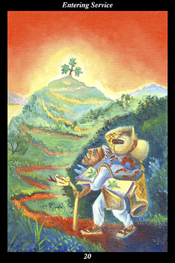

 | IMAGEAn old man steps onto a long road that winds up a mountain, at the summit of which a plant grows. He carries everything he needs for a long journey. Under his arm, he carries a painted book of healing plants, opened to a plant matching the one on the summit before him. His walking stick is in the form of a serpent. |
INTERPRETATION
The old man represents wisdom gained through experience and means you are more concerned with bringing
benefit to others than you are with receiving recognition for your efforts. The plant at the mountain’s summit represents a distant goal and the long road winding up to it symbolizes the many twists and turns facing you on your lengthy journey. That he carries everything he needs for a long journey means that you have anticipated hardship and prepared for it ahead of time. The painted book of medicinal plants symbolizes the knowledge of the ancestors that is as relevant in the present as it was in the past. That the book is opened to a painting matching the plant living atop the summit means that your goal is part of the living tradition of the old ones. The walking stick in the form of a serpent symbolizes a helping spirit who knows the way on this winding and convoluted path. Taken together, these symbols mean that you initiate a new and fuller realization of your potential by materially helping others obtain what they most need.
ACTION
The masculine half of the spirit warrior undertakes an arduous journey in order to alleviate the need of others. The quest to find
benefit is a noble calling but one to be undertaken only when we are willing to accept the trials by which we acquire practical knowledge and ready to accept the tribulations by which we learn self-sacrifice. Because experience has taught you that serving others is a nobler pursuit than serving yourself, you do not hesitate to take up this next leg of your journey. Because it will be a long and difficult endeavor, you set your determination to see matters through to the end. Because you cannot always count on others to make the hard parts of the journey easier, you make yourself self-reliant, flexible, and strong. Because others lack consistency of vision and become periodically fascinated by new ideas, you study on your own and incorporate time-proven methods into your approach. Because you strive to realize the highest vision, you pay close and constant attention to your spirit guide, who steers you clear of the pitfalls on the road of service.
INTENT
Observe those who profess to be pursuing a goal similar to your own. Distinguish between those motivated by selflessness and those motivated by self-interest, between those content to fulfill their duty to others and those striving for advancement and recognition. Learn from the ambitious that ulterior motives poison
benefit. Learn from the selfless that pure intentions nourish
benefit. By weeding out unnatural feelings of being taken advantage of, you cultivate your innate garden of sincerity, devotion, and generosity. By observing those who habitually exhibit cynicism and self-righteous indignation, you learn that poison eventually poisons the one who produces it. By observing the incorruptible benevolence of your helping spirit, you learn that enduring noble-heartedness is itself the road by which you yourself become
benefit. Sow your seeds of intent in the timeless that others might receive
benefit in time.
SUMMARY
Do not forget that you have undertaken a difficult road in order to
benefit others. Watch your reactions carefully, making sure that you harbor neither resentment toward those you serve nor distrust of those with whom you serve. Continue to focus on the ideal of your goal, allow your journey to ennoble you. Do not listen to voices that sow dissension or dissatisfaction in your heart.
THE LINE CHANGES
1° Just because you can do something doesn’t mean you should—to humble others is seldom wise. Keep your thoughts to yourself and use your talents to build others up. These are not essential matters to you, so stop being so invested in them and help others around you succeed.
2° Just because the rule worked once doesn’t mean it will work again—conditions have changed and you must change with them. You are being too cautious and acting as if you had no confidence. Envision how this partnership fits with your long-range goals and then act.
3° Just because one thing doesn’t work doesn’t mean its opposite will—you must not swing from extreme to extreme. Go no higher for a while—you must master this level before advancing again. Adopt a permanent demeanor of having just finished a full meal—be without any hunger.
4° Just because you have good ideas doesn’t mean others haven’t thought of them earlier—look for those who are already working toward your goal. These are the people to learn from and align with. Think no further than adding your energy to their momentum.
5° Just because the present is easy doesn’t mean the future will be—what makes great leaders is their ability to adapt to future conditions. Now is the time to temper extravagance, pay off debts, and invest in promising ideas. This is the road to redoubling your future blessings.
6° People are malleable but cannot be oppressed indefinitely—clamping down too tight makes them question authority. Once they begin looking into their own authority, their spirits can no longer be molded to another’s will. Step forward to meet their material needs and you will win their loyalty.